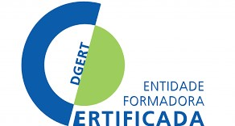

A Engenho&Obra, ONGDdinamiza a aplicação da Engenharia ao contexto social para dar respostas eficazes a problemas reais, em articulação com outras áreas do conhecimento.
O conceito de Engenharia Solidária, promovido pela Engenho&Obra ONGD, inclui iniciativas que possam significar benefícios reais para as populações num modelo de desenvolvimento inclusivo e sustentável e capaz de gerar educação, saúde, cultura, lazer, saneamento, habitação, energia, mobilidade e segurança, através da participação ativa da Comunidade Académica em ações de Responsabilidade Social.
A participação nesta iniciativa proporciona aos alunos/as uma experiência em contexto real e em equipas multidisciplinares, composta por aprendizagens não formais na vertente do voluntariado, da solidariedade e da cidadania ativa numa oferta formativa de desenvolvimento técnico e pessoal valorizadas no mercado de trabalho e com averbamento no Diploma de Curso.
A Engenharia Solidária integra a noção de que TODOS/AS PODEMOS SER AGENTES TRANSFORMADORES. Participe!
• Ações de divulgação e sensibilização
• Iniciativas conjuntas de apoio social
• Estágio curricular
• Grupos de trabalho de desempenho de projeto
• Missões nos Países da Lusofonia
Pré-inscrição através do formulário de contacto deste site, indicando em assunto ENGENHARIA SOLIDÁRIA – SOMOS AGENTES TRANSFORMADORES.
- • Diagnóstico/estudo de caso
- • Prospeção de linhas de financiamento nacionais e internacionais
- • Estabelecimento de parcerias
- • Constituição e gestão de grupos de trabalho multidisciplinares
- • Desenho e submissão de candidaturas
- • Execução física e financeira de projetos
- • Avaliação interna e externa
- • Avaliação de impacto
Linhas de atuação setorial
• Água: Potabilidade, Redes de distribuição a aglomerados populacionais, Redes de drenagem de águas residuais, Irrigação e Drenagens, Dessalinização, Ambiente, Geotecnia, Aquacultura / Piscicultura, Permacultura.
• Ambiente e Alterações Climáticas: Energias alternativas, Painéis Solares, Fornos Solares, Distribuição Energia, Gestão da fatura energética.
• Mobilidade: sustentabilidade na mobilidade urbana; mobilidade e saúde.
• Segurança alimentar: Nutrição, Agricultura Sustentável, Florestação/Reflorestação, Saúde Pública.
• Arquitetura e Urbanismo: smartcities.
• Empreendedorismo de Inovação Social: modelo de negócio social; economia circular; responsabilidade social.
• Cidadania Ativa: Direitos Humanos; ambiente/desenvolvimento sustentável; educação rodoviária; educação financeira; educação do consumidor; empreendedorismo; igualdade de género; interculturalidade; defesa e segurança; educação para a paz; migrações; intergeracionalidade; voluntariado; educação para os media; educação para a saúde; dimensão europeia da cidadania.
• Educação para o Desenvolvimento: inter-relações sociais, culturais, políticas e económicas entre o Norte e o Sul; cidadania global responsável; educação para a sensibilização e mobilização da sociedade para as prioridades do desenvolvimento humano sustentável; Capacitação de dirigentes, técnicos intermédios e superiores de organizações da sociedade civil (OSC) e das estruturas de poder político local dos países da Lusofonia em Gestão de Projetos Sociais de Intervenção.

A Engenho & Obra, ONGD é uma Entidade Certificada pela DGERT (Certificado nº 0503/2013), para as seguintes áreas: Ciências Empresariais (340), Gestão e Administração (345) e Tecnologia de Proteção do Ambiente (851).
Plano de formação aqui
• Faça a sua pré-inscrição através do formulário de contacto deste site, indicando em assunto o nome da AÇÃO DE FORMAÇÃO em que pretende participar.
Para proceder à inscrição na Bolsa de Capacitação como Formador/a ou Consultor/a deverá enviar para secretariado@engenhoeobra.org.pt o seu CV, áreas de interesse e CCP, indicando em assunto “ Bolsa de Capacitação”.
SEJA VOLUNTÁRIO, com a sua experiência, o seu saber e a sua vontade de participar em atividades concretas e em equipas multidisciplinares no âmbito da solidariedade, da cidadania ativa e participação cívica.
Áreas de Voluntariado:
• Social: apoiar indivíduos e grupos excluídos ou em risco de exclusão social; a receção de imigrantes; a atenção de grupos com necessidades especiais, deficiências específicas ou deficiências de diferentes tipos.
• Cultural: recuperação ou conservação da identidade cultural, a promoção da criatividade, a disseminação de bens culturais.
• Educacional: atividades de alfabetização e educação de adultos, de defesa da educação de todas as pessoas, de participação nas comunidades escolares.
• Meio mbiente: ações para a proteção ou recuperação de espécies ou espaços naturais, localização de situações de degradação ambiental, cuidado e a proteção de animais, conscientização e sensibilização da população em geral para a proteção do meio ambiente e promoção de uma vida sustentável e ambientalmente amigável.
• Saúde: atividades de promoção de hábitos de vida saudáveis, na defesa de saúde de qualidade para todas as pessoas.
• Cidadania: ações de promoção da participação cívica, fortalecimento de organizações e movimentos sociais, promoção de iniciativa social.
• Promoção de grupos: ações de defesa de direitos, integração social de grupos em risco de exclusão social, como mulheres, jovens, imigrantes, reclusos, etnias.
• Direitos Humanos: ações destinadas a defender e denunciar violações de direitos humanos, conscientização social sobre a importância dos direitos humanos.
• Desenvolvimento social e económico: ações de promoção social e de desenvolvimento económico ao nível local e comunitário, destinadas a melhorar as condições de vida de uma comunidade ou setor social específico.
• Lazer e tempo livre: ações voltadas ao trabalho com crianças e adolescentes para a educação do tempo livre, a promoção de valores, conhecimentos e atitudes que são desenvolvidos nas atividades de lazer.
• Apoio à gestão de organizações: ações voltadas para as entidades sociais e empresariais que possam necessitar de orientação e apoio à sua gestão nos âmbitos jurídico, técnico, financeiro e organizacional.
• Promoção de voluntariado: ações de apoio, divulgação e reconhecimento de voluntários, bem como de promoção de maior participação social nesse tipo de atividades.
Pré-inscrição através do formulário de contacto deste site, indicando em assunto VOLUNTARIADO.
Ser associado/a da Engenho&Obra é:
• Fazer parte de uma comunidade inovadora que defende ativamente os Direitos Humanos e o Desenvolvimento Ecologicamente Sustentável e em que todos/as participam como Agentes Transformadores.
• Ter acesso a conhecimento científico e tecnológico privilegiado e beneficiar de uma extensa rede de parcerias e contactos em Portugal e nos PALOP, bem como a fundos nacionais e internacionais de financiamento de iniciativas e projetos.
Pré-inscrição através do formulário de contacto deste site, indicando em assunto TORNAR-SE ASSOCIADO/A.
Como participar:
• Parcerias
• Prestação de serviços
• Voluntariado
• Donativos (depósito em conta, com passagem imediata de recibo de doação)
IBAN: PT50 0035 0328 00019526930 88